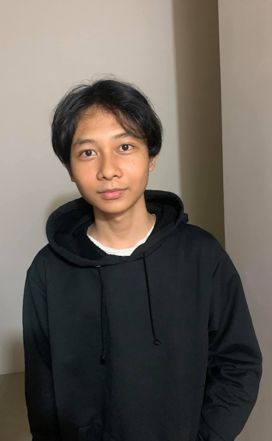

Firyal lahir pada 4 April 2003 di TulungAgung, Jawa Timur, Indonesia.Namun, Dia tinggal di Brondong, Lamongan, Jawa Timur.
Saat ini dia menempuh pendidikan Di Universitas Pembangunan Nasional "Veteran" Jawa Timur mulai tahun 2021 mengambil jurusan Informatika. Dia mengikuti UKM E-Sport Cabang Mobile Legend : Bang Bang Sebelumnya dia menempuh Bangku SMA di SMA Muhammdaiyah 9 Brondong-Lamongan.
Dia anak pertama dan memiliki 2 adik perempuan. Dia biasa dipanggil dengan nama pendek "Firyal".